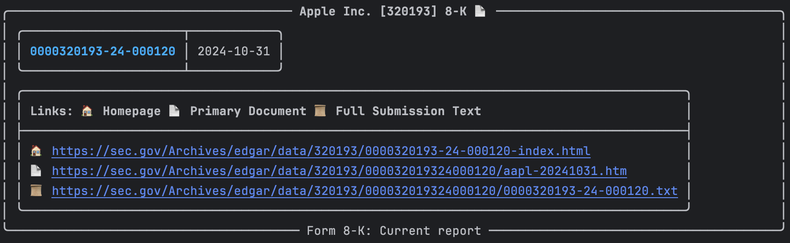
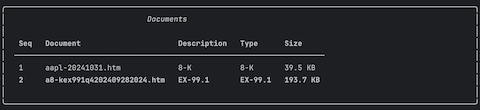
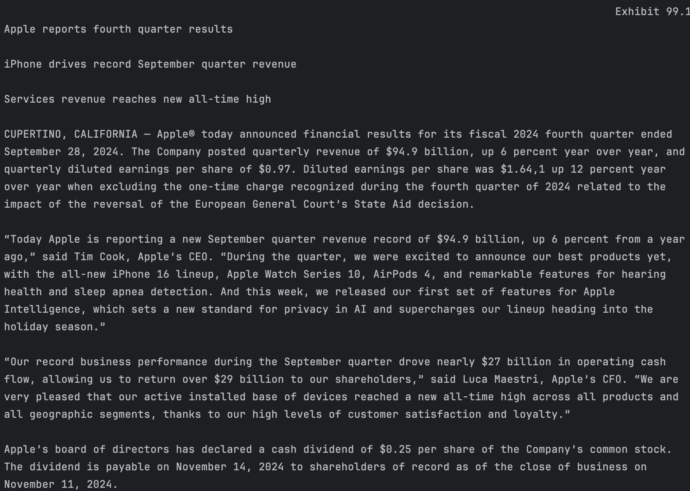

Eight-K Filings
Imagine having instant access to a company's most critical corporate updates the moment they happen!
8-K filings are real-time windows into significant corporate events, revealing everything from leadership changes to major business transformations.
With edgartools, you can effortlessly retrieve and analyze these crucial SEC documents in just a few lines of Python code.
Getting 8-K filings for a company
The easiest way to get 8-K filings is to get access to a company object and use the latest function.
You can restrict to the latest 5 filings by passing n as a parameter.
This returns a Filings object with multiple filings so to get a single filing use the bracket [] operator e.g. filings[1].
c = Company("AAPL")
filings = filings.latest("8-K", 5)

To get the last filing use latest without n. This returns a single Filing object.
filing = filings.latest("8-K")

Getting all 8-K filings
Another way to get 8-K filings is to use get_filings(form="8-K"). This gets all the filings for a company, but also allow for filtering by date
filings = c.get_filings(form='8-K')
Filtering by date
You can also filter the filings by date using a range 'YYYY-MM-DD:YYYY-MM-DD' or from a specific date 'YYYY-MM-DD:' or before a specific date ':YYYY-MM-DD'.
filings = c.get_filings(form='8-K', date='2022-01-01:')

Viewing the 8-K filing
Once you have the 8-K filing you can view it in the browser using filing.open()
filing.open()
You can also view it in the console using filing.view()
filing.view()

Viewing the filing exhibits
8-K filings often gave attached exhibits which contain the informnation the company is releasing in the filing.
You can view the list of exhibits using filing.exhibits
filing.exhibits

Viewing a specific exhibit
To select a specific exhibit use the bracket [] operator e.g. filing.exhibits[0]. This selects the first exhibit, so filing.exhibits[1] selects the second exhibit.
To view the exhibit filing.exhibits[1].view()
filing.exhibits[1].view()

Downloading the exhibit
To download the exhibit use filing.exhibits[1].download(). Note that this downloads the file into memory, while you may want to download to a path.
To download to a path use filing.exhibits[1].download(path="path/to/save")
filing.exhibits[1].download()